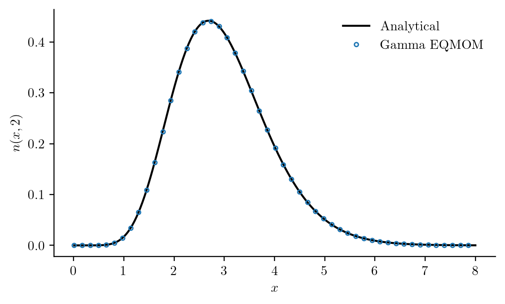

Moment methods
Sometimes the quantities of interest are total number, mean size, or total population material rather than every bin of a distribution. Moment methods describe evolution through a finite set of integrals:
\[\mu_k(t)=\int_0^\infty x^kn(x,t)\,dx.\]
This differs from calling moment(grid,N,k) after direct discretization. In a raw-moment model these integrals are the dynamical variables. DQMOM instead advances weights and weighted abscissas, recovering moments from those states. MomentSet(0:K) defines the tracked basis, not every method's storage layout. Use moment_value or moment(ctx,k) to read moments without assuming a layout. In either route we need equations for their rates, often with a closure for integrals not determined by the tracked moments.
Reuse a physical model and choose its resolution
Moment formulations use the same PBMModel, parameter container and physical callbacks as direct discretization. Select the family with moment_method; select the time integrator separately with simulate(...; method=...):
using PopulationBalanceModels
model = PBMModel(growth=Growth((x,p,t,ctx)->p.a*x^2))
basis = MomentSet(0:3; coordinate=:volume)
operator = compile(model,basis; moment_method=QMOM())
problem = PBMProblem(operator,[1.,1.,2.,6.],(0.,0.02); p=(a=0.1,))
solution = simulate(problem; method=SSPRK33(),dt=0.001)
moment_plan(operator).state_layout:raw_momentsNo polynomial declaration is required to use this callback. Its weak-form integrals use the selected quadrature. QMOM() resolves two nodes from the four requested moments; QMOM(2) makes the same choice explicitly.
| Family | Required orders | Resolution and independent accuracy controls |
|---|---|---|
QMOM() or QMOM(N) | 0:2N−1 | N positive atoms; fixed rank |
RankAdaptiveQMOM() or RankAdaptiveQMOM(N) | 0:2N−1 | At most N atoms; rtol controls all-moment reconstruction |
EQMOM() or EQMOM(N) | 0:2N | N Gamma kernels; secondary_nodes, rtol, maxiters control integration/inversion |
DQMOM() or DQMOM(N) | 0:2N−1 | N weights and N weighted abscissas; condition_limit controls source-system acceptance |
LogNormalClosure() | 0:2 | One assumed lognormal shape; quadrature_order controls generic integral accuracy |
The no-argument node-based constructors infer resolution during compilation. The compiler never adds moments or invents their initial values. More secondary integration points do not add physical shape resolution.
Without a family keyword, supported analytically closed models use ExactClosure(). Models needing reconstruction use RankAdaptiveQMOM() when the requested basis has an even number of moments. An incompatible basis raises an error: change the retained orders or explicitly select a compatible family. Three moments do not automatically mean a lognormal or Gamma population.
Analytical contributions and closure in the same equation
Structured laws enable analytical specialization. For quadratic growth, declare its known coefficients without changing the physical equation:
model = PBMModel(growth=Growth(PolynomialRate((0.,0.,(p,t,ctx)->p.a))))
operator = compile(model,basis; moment_method=QMOM())
derivative = zeros(4,1)
rhs!(derivative,reshape([1.,1.,2.,6.],:,1),operator,(a=0.1,),0.)
@assert vec(derivative) ≈ 0.1 .* [0.,2.,12.,60.]
moment_plan(operator).terms.growth((order = 0, treatment = :analytical, dependencies = (), missing = ()), (order = 1, treatment = :analytical, dependencies = (2,), missing = ()), (order = 2, treatment = :analytical, dependencies = (3,), missing = ()), (order = 3, treatment = :closure, dependencies = (4,), missing = (4,)))For orders 0:3 the equations are
\[\frac{d\mu_0}{dt}=0,\qquad \frac{d\mu_1}{dt}=a\mu_2,\qquad \frac{d\mu_2}{dt}=2a\mu_3,\qquad \frac{d\mu_3}{dt}=3a\widehat\mu_4.\]
Only the missing fourth moment comes from QMOM. At the displayed initial state, the two-node reconstruction gives $\widehat\mu_4=20$. The unit exponential population with these same four moments has true fourth moment 24. Evaluating the known formula analytically does not remove that closure approximation. If a polynomial equation has several contributions, its tracked moments still enter directly; only missing orders are reconstructed.
moment_plan reports the resolved family, state layout, closure requirements, boundary restrictions and each named term's treatment in each equation. A selected family is preserved even if every evolution term is analytical: its admissibility and reconstruction/observation meaning still apply. Closure error can propagate through the coupled moment equations over time.
Compilation uses declared structure, not sampled callback values. Each RHS prepares the selected reconstruction once, shares it across contributions, and caches missing moments only for that state. Coefficients still read current parameters, time, fields and bulk states. Gamma missing moments integrate the selected kernels; lognormal missing moments use its assumed lognormal law. Generic callback integrals retain their independent quadrature controls. Point births and MomentSource use their own source moments, including for an empty population; they are not weighted by population quadrature.
Integrate the balance against a particle property
For vanishing unmodelled boundary flux, the growth, source, removal, and collision contributions are
\[\frac{d\mu_k(t)}{dt} =k\int_0^\infty x^{k-1}G(x,t)n(x,t)\,dx+J(t)x_c^k+S_k(t) -\int_0^\infty x^kd(x,t)n(x,t)\,dx+\mathcal A_k(t)+\mathcal F_k(t),\]
with additive-coordinate aggregation
\[\mathcal A_k(t)=\frac12\int_0^\infty\int_0^\infty [(x+y)^k-x^k-y^k]K(x,y,t)n(x,t)n(y,t)\,dx\,dy\]
and breakage
\[\mathcal F_k(t)=\int_0^\infty a(x,t)n(x,t) \left[\sum_j\nu_j(x,t)x_j(x,t)^k-x^k\right]dx.\]
For a nonadditive coordinate, the aggregate size is obtained through the declared AdditiveCoordinate map. Boundary losses at zero or infinity are not inferred. The residual rules do not infer an extinction trace. Native MeasureEuler with explicit absorption instead uses positive atomic characteristics and node removal, with rank refinement needed for a continuous population.
Optionally require analytical evolution only
Affine growth and constant-kernel aggregation in an additive coordinate produce a closed hierarchy through any chosen integer order. Declare the polynomial structure so the compiler can find its moment dependencies:
using PopulationBalanceModels
basis = MomentSet(0:3;coordinate=:volume)
model = PBMModel(
growth=Growth(rate=PolynomialRate(((p,t,ctx)->p.g,0.1))),
primary=Nucleation(rate=(p,t,ctx)->p.J,size=0.0),
aggregation=Aggregation(ConstantKernel((p,t,ctx)->p.K)),
)
operator = compile(model,basis;moment_method=ExactClosure())
problem = PBMProblem(operator,[1.0,1.0,2.0,6.0],(0.0,1.0);
p=(g=0.2,J=0.1,K=0.3))
solution = simulate(problem;dt=0.001)
vec(solution.u[end])4-element Vector{Float64}:
0.9567097695735923
1.3108134559817026
3.3919302035987213
13.101464813188214ExactClosure also supports polynomial removal, self-similar polynomial-rate breakage, point creation, and MomentSource. Removal and breakage polynomial coefficients must be nonnegative; growth coefficients may be signed. Strict compilation distinguishes untracked moment dependencies from an unavailable analytical rule for a callback declaration. A callback may be mathematically closed even when its symbolic form is unknown to the compiler. ExactClosure requires neither closure approximation nor an unresolved boundary trace; it does not promise exact time integration or a uniquely recovered distribution. Ordinary compilation already uses supported analytical contributions without this strict request. A distributed source must provide its raw moments through MomentSource(J,(k,p,t,ctx)->E_xk).
The cooling-crystallization model has an exact four-moment closure because its growth is affine in length. Its build_moments routine uses the same kinetic parameters and nucleation callback as its direct-discretization builder, and couples the third moment to dissolved concentration. This supplies a useful check independent of direct discretization.
Approximate an unclosed hierarchy
General size-dependent rates can require integrals that the tracked moments do not determine. The quadrature approach originates with McGraw (1997). The package's scaled inversion and all-moment acceptance checks are implementation choices described below. The implemented approximation families make different assumptions:
QMOM(n)(alsoQuadratureClosure(n)) reconstructs positive quadrature nodes and weights from moments 0:2n−1. The rate callbacks are evaluated through their weak forms at those nodes. Scaled Hankel inversion is checked by reconstructing the input moments. Empty states are supported; rank-deficient nonempty states fail rather than silently changing node count or repairing moments.LogNormalClosure(quadrature_order=16)fits a lognormal density to moments 0:2 and integrates its weak forms with cached normal quadrature. Empty and point-mass limits are supported. A three-moment assumed density cannot recover multimodality, even if its weak-form quadrature is accurate.
realizability reports necessary Hankel positivity checks. These do not prove realizability at singular truncated-moment boundaries. A closure needs its own accuracy and convergence assessment; selecting QMOM does not establish agreement with a full size distribution for nonlinear nanoparticle kinetics.
The aggregation and nucleation case study compares fixed and rank-adaptive QMOM, Gamma EQMOM, DQMOM and the lognormal closure. It separates analytical and direct-discretization references, checks time and reconstruction quadrature separately, and retains failed trajectories in the comparison. Tracked material moments and material inferred from an assumed shape are identified separately. Continuous daughter laws may supply daughter_moment(law,parent,k,p,t,ctx); UniformVolumeDaughters gives its exact inner integral. Outer population integrals still use the chosen moment reconstruction.
Compatibility and coupling
method=family and closure=family remain aliases for moment_method=family; supply only one family keyword. Use the canonical keyword in new code. Explicit methods=TermMethods(...) remains advanced compatibility behavior: ExactMomentRule() requires every dependency of that named term to be tracked; QuadratureMomentRule() deliberately evaluates its population integrals by quadrature. The latter is rejected with strict ExactClosure. No per-term choice is required for automatic mixed evaluation. Use moment_plan, rather than a single term_methods label, to inspect mixed contributions.
Known analytic rules may now replace previously default quadrature evaluation. This can change results when a secondary quadrature was unresolved, especially high lognormal/Gamma moments. Compare against independent references and retain original benchmark provenance; changing default evaluation is not evidence that an old trajectory has been replayed. The stored case-study outputs are unchanged.
Residual solvers retain the unbounded zero-unresolved-flux assumption. Declared finite support or absorption/escape requires the existing native MeasureEuler events and a supported reconstruction family; canonical moment_method=ExactClosure() rejects an unresolved boundary. Legacy closure=ExactClosure() / method=ExactClosure() event configurations remain usable with an explicit MeasureEuler reconstruction; their plan reports the boundary reconstruction requirement, and their residual still rejects an inferred trace. Prefer RankAdaptiveQMOM for new boundary-event models. ExactClosure with an explicit MeasureEuler reconstruction also remains available for its closed, unbounded-support configuration.
Native Runge–Kutta methods check the selected closure at accepted states as well as before rate evaluations. A realizable vector can still fail a chosen closure or its integration quadrature; reducing the timestep alone need not resolve that failure. Finite-support initial moments must satisfy the necessary inequalities $a\mu_k\leq\mu_{k+1}\leq b\mu_k$. These inequalities and Hankel checks are not a complete certificate for singular truncated moment problems. The stronger positive-measure reconstruction belongs to the explicitly selected MeasureEuler policy.
Lognormal integration checks each tracked moment in its own units, using $\mu_0(\mu_1/\mu_0)^k$ as its absolute scale. Changing from metres to micrometres therefore does not change reconstruction eligibility. The standard-normal Gauss rule obtains weights from orthonormal Hermite polynomials using the Christoffel identity, preserving tiny positive weights that a generic eigenvector calculation can lose. Increasing quadrature_order improves integration of an assumed shape; it does not make that shape more representative of the physical population.
Moment populations can share a PBMSystem with eligible direct-discretization populations. MomentExchange(:particles,:c,k;factor=...) derives bulk exchange from the actual moment rate. Its invariant $c+\mathrm{factor}\,\mu_k$ assumes a fixed conversion factor; a changing density or composition needs its additional balance. The supplied PopulationTransfer and CrossAggregation do not operate on moment states; moment interactions can be written explicitly through CustomCoupling.
Use MomentObservable, PopulationMoment, or a custom observation to measure the result. Histogram predictions require a declared reconstruction or measurement model. Optim and SciML adapters can use moment problems, subject to the same closure and boundary restrictions.
Adapt the quadrature rank
RankAdaptiveQMOM(max_nodes) keeps moments 0:2max_nodes−1 as the ODE state. During each residual evaluation it tries quadratures with increasing rank and accepts the smallest one that reproduces every tracked moment, including moments not used in that smaller inversion. This allows an empty or point-mass population without pretending its Hankel matrix has full rank. rtol controls the scaled reconstruction residual; it does not change the number of ODE states. No moment vector is clipped or projected to make inversion succeed. Empty-state inversion does not by itself solve nucleation/growth startup: an explicit Runge–Kutta predictor can leave the realizable-moment cone. There is no special startup regularization; use a suitable realizability-preserving integration/initialization or direct discretization for that stage.
using PopulationBalanceModels
basis = MomentSet(0:5)
nodes, weights = [1.0,3.0], [0.4,0.6]
mu = [sum(weights .* nodes.^k) for k in 0:5]
q = quadrature(basis,mu,RankAdaptiveQMOM(3))
(q.rank, q.nodes, q.moment_error)(2, [0.9999999999999978, 2.9999999999999996], 5.697183019859597e-16)A tolerance-based rank decision is discontinuous. Inference through these eigenvalue inversions is not supported by ForwardDiff; select explicit finite differences and check the stability of the rank under perturbation.
A lognormal quadrature must resolve both the evolved moments and the rate integrands. For example a size-sixth-power breakage law in a three-moment model uses inferred M6, M7 and M8. A declared polynomial hazard evaluates these lognormal moments analytically; a generic hazard still integrates its weak form with the chosen quadrature. Passing the M0–M2 reconstruction check says nothing about generic integral accuracy; refine quadrature_order and the timestep independently. A rapidly growing inferred tail can also make the closure's own equations singular. Neither effect is a particle/material conservation law.
Reconstruct a density with Gamma EQMOM
A quadrature rule represents integrals. It does not by itself define a smooth PSD. Gamma EQMOM makes an additional kernel assumption:
\[n(x,t) \approx \sum_{i=1}^{N} w_i(t) \frac{x^{\alpha_i(t)-1}\exp[-x/\sigma(t)]} {\Gamma[\alpha_i(t)]\sigma(t)^{\alpha_i(t)}}, \qquad \alpha_i(t)=\frac{\xi_i(t)}{\sigma(t)}.\]
Each kernel has mean $\xi_i$, variance $\xi_i\sigma$ and the same positive scale $\sigma$. EQMOM(N) uses moments 0:2N, one more than ordinary QMOM. Triangular deconvolution removes the Gamma-kernel contributions from the raw moments. A bracketed search finds the realizability boundary of the deconvolved Hankel matrices. The primary quadrature is accepted only if the original mixture reproduces all input moments. A failed Float64 primary inversion is retried with a 256-bit width search and factorization of the same moment vector; q.inversion_precision reports 53 or 256 bits. The small final Jacobi eigenproblem and returned nodes/weights remain Float64. This arithmetic refinement does not change the kernel family, the requested reconstruction tolerance or the evolved moments. It cannot remove genuine family infeasibility or uncertain input moments. Some nonnegative moment vectors cannot be represented by this family; those inputs fail explicitly. The growth/nucleation comparison distinguishes an ill-conditioned but representable reference state from later reference moments that fail the three-kernel positivity conditions. A failed evolution must also be checked for integration error; it does not by itself establish failure of the closure family.
Generic rate integrals use a secondary Gauss–Laguerre rule within each kernel. Known polynomial expressions use analytical kernel moments for missing orders, while tracked moments are read directly. secondary_nodes controls that integration accuracy independently of N, the number of mixture components. Refine rtol and the timestep separately: a small reconstruction error can still produce a large error in an untracked high-order rate integral. Increasing secondary_nodes does not repair a failed primary inversion. At zero width the reconstruction becomes atomic and no ordinary density exists. Empty populations are allowed; growth through zero still requires a separate extinction model.
using PopulationBalanceModels
basis = MomentSet(0:2)
mu = [1.0,2.0,4.4] # Gamma mean 2, variance 0.4
method = EQMOM(1;secondary_nodes=16)
operator = compile(PBMModel(growth=Growth((x,p,t,ctx)->sqrt(x))),basis;moment_method=method)
q = quadrature(basis,mu,method)
(q.primary_nodes,q.width,reconstructed_bins(basis,mu,method,[0.,1.,2.,4.,Inf]))([2.0], 0.20000000000000015, [0.031828057306204874, 0.5102422282219424, 0.45293430216354513, 0.0049954123083076046])reconstructed_density evaluates this declared mixture; reconstructed_bins uses exact Gamma-CDF bin integrals. weight_order=3 gives length-cubed weighting and normalize=true conditions on the specified measurement window. A FunctionObservable can call these functions explicitly for inference. This is a kernel observation model, not a uniquely recovered PSD. Only the Gamma kernel is supplied; lognormal EQMOM, CQMOM and multivariate moment closures remain unimplemented. The eigenvalue/root inversion requires explicit finite-difference inference. The construction follows the Gamma extended quadrature framework of Yuan, Laurent and Fox (2012). The package's checked inversion and precision retry are implementation choices; the citation does not establish support for other EQMOM kernels or every test case in that paper. Dürr and Bück give a later review.
Evolve nodes and weights with DQMOM
DQMOM(N) advances $2N$ variables: positive weights $w_i$ followed by weighted abscissas $q_i=w_i\xi_i$. Pass these variables, rather than raw moments, to PBMProblem:
using PopulationBalanceModels
method = DQMOM(2)
basis = MomentSet(0:3)
u0 = quadrature_state(method,[1.,3.],[0.4,0.6])
operator = compile(PBMModel(growth=Growth((x,p,t,ctx)->0.2x)),basis;moment_method=method)
solution = simulate(PBMProblem(operator,u0,(0.,1.));dt=0.005)
quadrature(basis,last(solution.u),method)(nodes = [1.2214027581499831, 3.6642082744499556], weights = [0.4, 0.6])For a required raw-moment rate $S_k$, the direct source equations are
\[\sum_{i=1}^{N}\left[(1-k)\xi_i^k\frac{dw_i}{dt} +k\xi_i^{k-1}\frac{dq_i}{dt}\right]=S_k, \qquad k=0,\ldots,2N-1.\]
The same growth, nucleation, removal and collision weak forms supply $S_k$. The implementation scales sizes by their current weighted mean and solves the confluent system with LU. It checks conditioning on that dimensionless matrix. Coincident nodes, vanishing weights and an empty initial population are rejected; no arbitrary seed weight or regularization is inserted. Adaptive QMOM and EQMOM can invert empty moment vectors, with the startup integration restriction stated above. DQMOM currently describes local batch or coupled balances, not spatial transport of its nonlinear node variables. See Marchisio and Fox for the direct quadrature formulation. MomentExchange uses the full chain rule above, so bulk exchange remains consistent with these solver states.
Check a known evolution
For $G(x)=0.2x$, every tracked moment satisfies $d\mu_k/dt=0.2k\mu_k$. The initial Gamma density stays Gamma as sizes grow. The runnable comparison checks the raw moments for QMOM, adaptive QMOM, EQMOM and DQMOM and plots the explicit EQMOM density against its analytical value. This scaling test verifies implementation; it does not establish closure accuracy for arbitrary nonlinear kinetics.

julia --project=. examples/quadrature_moment_methods.jl
python docs/benchmarks/plot_population_studies.py moments --usetexThe extension interface supplies separate hooks for state length, raw-moment values, moment chain rules, reconstruction and stage checks. New families must implement those contracts rather than treating their solver states as raw moments.
Evolve an admissible state and handle disappearance
simulate(problem;dt,method=MeasureEuler()) constructs positive measures for supported raw-moment families instead of relying only on Hankel checks of an explicit predictor. It supports exactly empty nucleation/growth startup, rank-adaptive atomic extinction, and consistent shared-solute exchange. The compatibility matrix and numerical contract state the supported terms, first-order composition, CFL restrictions and closure limitations. EQMOM, lognormal and direct DQMOM are explicitly excluded from this policy; their existing residual interfaces are retained.
Run the small mixed-evaluation example without generating benchmark assets:
julia --project=. examples/moment_closures.jl
julia --project=. test/moment_compilation.jl